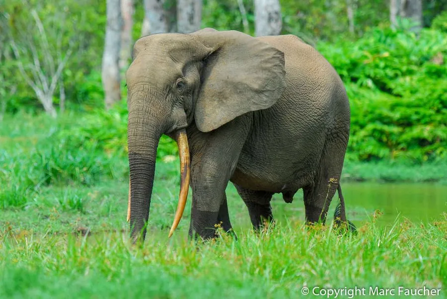

哺乳动物 · 动物界
非洲森林象 Loxodonta cyclotis

非洲刚果盆地雨林中的小型象，体型比草原象更小、耳朵更圆、象牙更直，是雨林种子传播的关键物种，现被列为极危。
- 分类
- 门脊索动物门纲哺乳纲目长鼻目科象科属非洲象属
- 栖息环境
- 刚果盆地及西非的低地热带雨林
- 地理分布
- 刚果民主共和国、刚果、加蓬、喀麦隆等中西非国家
- 保护级别
- IUCN 极危（CR）；非中国分布物种
物种志
非洲森林象肩高 2.0–2.5 米，体重 2–4 吨，明显小于草原象。它的耳朵较小且更圆，头骨较窄，象牙细长而直、向下微弯，前足有 5 个趾甲、后足 4 个，与草原象的 4/3 不同；皮肤呈灰褐色，常沾满泥土。
非洲森林象分布于刚果盆地及西非部分热带雨林，生活在茂密的雨林深处，以树叶、果实、树皮和藤蔓为食，采食后长距离移动，把大量种子散播到雨林中，被称为“森林园丁”。它们结成家族群活动，雌性带着幼象，雄象多单独行动。雌性妊娠期约 22 个月，每胎 1 仔，寿命可达 60 年以上。因象牙偷猎和栖息地破碎化，过去数十年种群锐减，被列为极危。
形态与习性
- 食性树叶、果实、树皮与藤蔓
- 肩高2.0–2.5 m
- 体重2–4 t
- 寿命60 年以上
- 繁殖妊娠期约 22 个月，每胎 1 仔
- 趾甲前足 5 趾、后足 4 趾
趣味知识
- 非洲森林象曾被当作草原象的亚种，后确认为独立物种。
- 它的象牙细长而直，与草原象弯曲的象牙不同。
- 森林象吞食果实后长距离移动，把种子播撒到雨林各处。